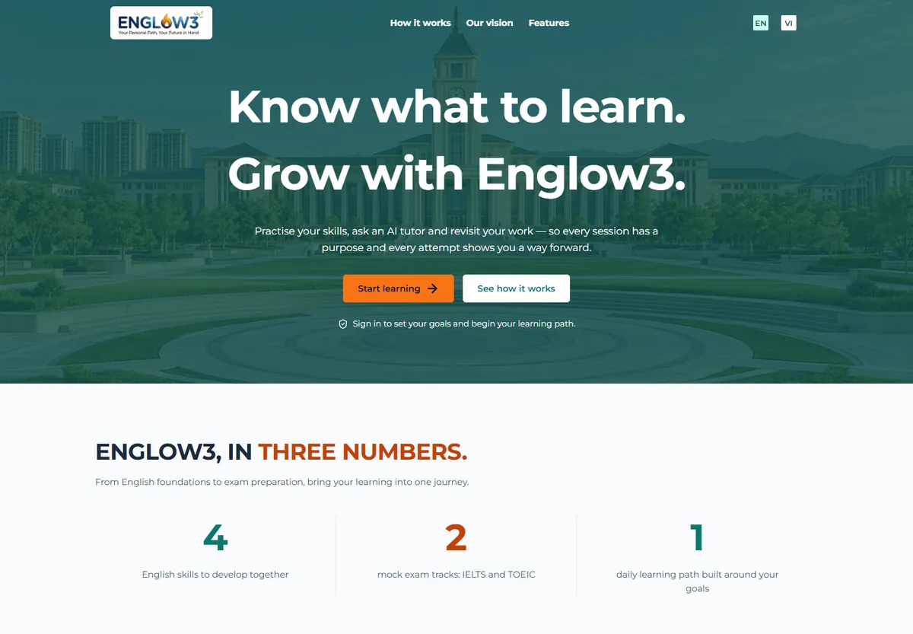

FULL-STACK · EDUCATIONPrivate repository · 2026 — ONGOING
Englow3.
A clearer path to English.
A graduation-thesis project bringing placement, exam practice and learning flows into one English test-preparation platform.

The problem
What needed to work.
Keep placement and exam data consistent while supporting different learning experiences on the web and on mobile.
The workflow
A deliberate path.
Place
Use a placement flow to establish a starting point.
Practice
Deliver exam and learning content through shared backend models.
Connect
Serve web and mobile clients through the platform API.
My contribution
Under the interface.
- Backend development with Java 21 and Spring Boot 3.
- Placement flow and a shared exam model.
- PostgreSQL data management with Flyway and jOOQ.
- API integration supporting Next.js web and Expo mobile clients.
Engineering decisions
One shared exam model
Web and mobile consume a consistent representation of exam content.
A platform foundation
Schema migrations and modular backend components support ongoing feature work.